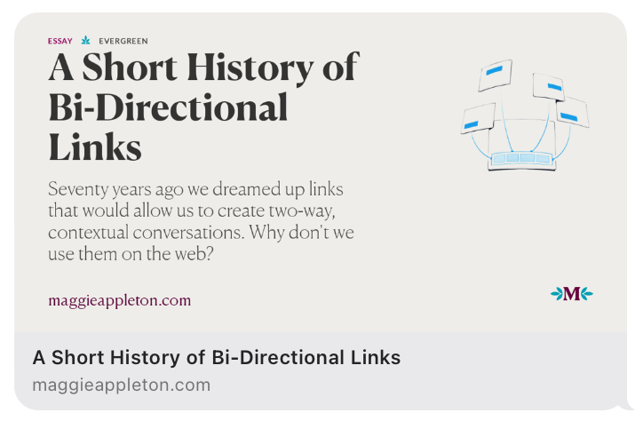

Rich Object Link Previews
Have you shared a Spotify link and seen a play button? Or maybe an article that has a beautiful preview image? To get that preview for your website, it takes only a handful of lines of code. 
This is what the preview might look like for an article. This example is from Maggie Appleton's website where she writes about her work making beautiful digital illustrations.
How does it work
When GUIs like iMessage or Twitter or even Facebook encounter webpages, they download the page in the background. If the webpage includes certain HTML tags, the applications will parse those to show a richer preview of a link.
Facebook created the
Open Graph Protocol
to turn a webpage into a
"rich object in a social graph"
. By inserting
<meta> tags in the <head> of a
document, you can annotate your webpage.
To get the richer link previews, add 4 tags to your HTML. The first
field,
property specifies what kind of annotaton we'll be using.
In this example, it's og for OpenGraph and then the element
the tag will describe. The content field is the value for
that respective property.
<!-- Title = The title of the Webpage-->
<meta property="og:title" content="The Rock" />
<!--
Type = The type of content being displayed. There's only certain
values that can be shown here
--a>
<meta property="og:type" content="video.movie" />
<!-- URL = The url thsi content can be found at (without any redirects)-->
<meta property="og:url" content="https://www.imdb.com/title/tt0117500/" />
<!--
Image = An accompanying image which complements the webpage. Maybe something
like a movie poster or a random stock image or a meme.
-->
<meta property="og:image" content="https://ia.media-imdb.com/images/rock.jpg" />
There isn't too much left to talk about for link previews of articles.
Twitter had a competing implementation of a similar graph concept, where
properties were prefixed with twitter instead of
og. Only one of the Twititer meta tags is still useful
since other major tech companies adopted the OpenGraph protocol.
To get your links to show up properly on Twitter, you need one more tag:
<meta name="twitter:card" content="summary_large_image" />
One slight but different is that Twitter users the
name property but OpenGraph uses the
property property.
I like the way Twitter allows users to explicitly specify the way the link should display. But personally, I don't thiink it stood a chance. If developers add Twitter specific tags, will every Social Media platform requirei their own set of tags? That would suck, we'd have to continually update pages to take into account every random media platform.
Even richer experiences
The OpenGraph protocol doesn't have too much else defined within it. Just like HTML is meant to go beyond pure text, OpenGraph can support complementary audio and video. It's a bit finnicky since we don't know exactly what makes Facebook tick, but other platforms may consume the OpenGraph properly.
When you share Spotify links in iMessage, they show up with a play button. Cool enough, but hitting the play button plays a preview of the track. To make the audio available for all users, but only the whole song available for Spotfify subscribers, the link preview only has a snippet of a song. It's important for websites which
Anything to be wary of?
Like all things in Computer Science, it depends. Although we don't know the specifics of how each proprietary link previewer works, there could be bugs in the code that generates a link preview. What if the preview downloads an entire webpage and that webpage is 50GB? That's a lot of data, especially if you have limited or pay-as-you-go bandwidth.
I'd hope that no link previewers execute JavaScript that's included in a page. The OpenGraph specification is pretty strict on which tags are meaningful, but malicious people will find a way.
What's next?
This is just one of the powers of HTML. None of this was included in the initial specification of HTML. Because HTML has a minimal amount of simplicity that can be built on top of, we get cool integrations like this.
If this sort of stuff excites you, I'd look into Microdata (a play on metadata) which Google uses to build out its Search Results. The more you annotate your documents, the more computers can create a richer, linked web.
- Schema.org Microdata for use in search engines
- RDFa specification - How browsers interpret schema.org
Sources
If you want to see where I got this information from, here's what I consulted.